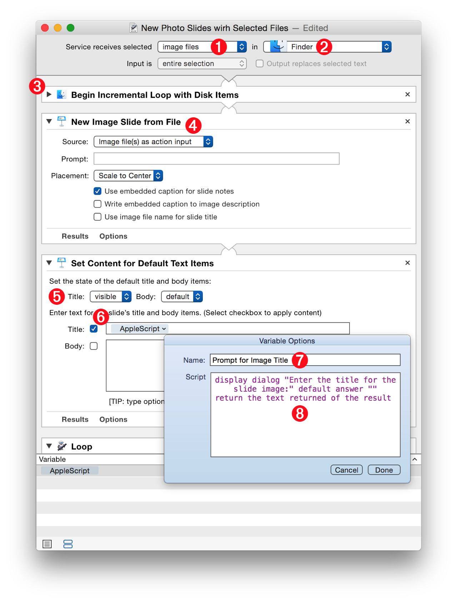
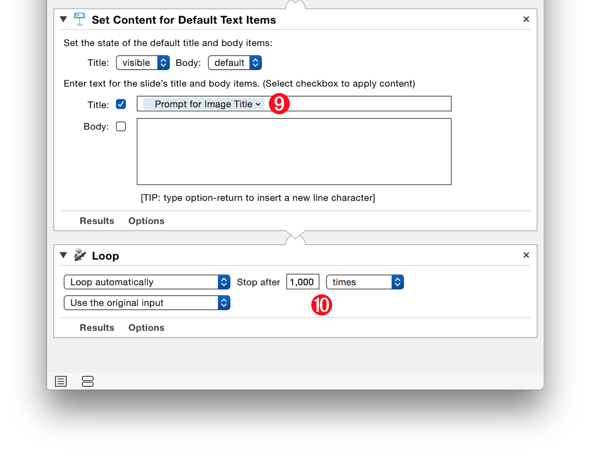
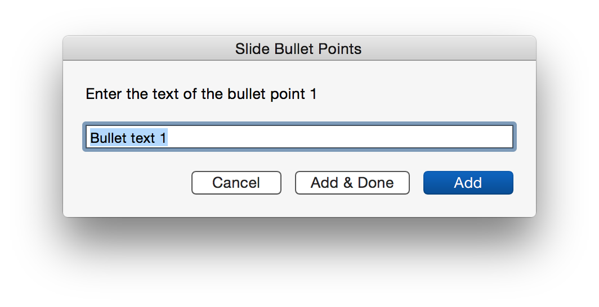

Using the actions from the Keynote Automator Collection, you can create solutions to solve many of your productivity challenges. Workflows can be simple or complex, fixed or dynamic, and can intgrate input and data from a variety of sources. The focus of the following example workflows is on some of the creative ways you can use this powerful collection of automation tools.
The “New Photo Slides with Selected Image Files” Service
The first example workflow uses a variety of techniques to create a contextual system-service that adds image files selected in the Finder, to an open Keynote presentation. To accomplish this task, the workflow incorporates:
- A processing loop that iterates the selected image file one-at-a-time
- A workflow variable containing an AppleScript script that prompts the user for data that is added to the created slide
Begin the process of constructing the workflow by creating a new workflow in Automator using the Service template. The following illustration callouts describe the various elements of the created workflow:
1 Input Type • The selection of popup menu indicates the type of data the service should use as input. A system-service will only be visible when data of the chosen type is selected.
2 Host Application • Select the application in which the system-service is to be made available.
3 Begin Incremental Loop • This automator action will iterate the input items one-at-a-time as the loop progresses. There are no settings for this action, just add it to the start of a service workflow that has disk items (files and/or folders) as its inout.
4 New Image Slide from File • Add this Keynote action and set its data source to be files from the action’s input.

5 Set Content for Default Text Items • This action enables the setting of a slide’s title and body content. Set the title element to be visible.
6 Title Input • This text field will contain the text for slide title. For this workflow, the title text will be generated dynamically by an AppleScript script each time the workflow loops. From the Automator variable library, drag an AppleScript variable into this field. To edit the added workflow variable, click and hold on variable and select “Edit…” from the forthcoming popup menu.
7 Script Name • In the top field of the edit window, enter a name for the variable.
8 Script Code • Enter the AppleScript code for prompting the user and returning the resulting text:
display dialog "Enter the title for this slide:" default answer ""
return (the text returned of the result)
9 Named Variable • The workflow variable after editing.
10 Loop Action • Add the Loop action to the end of the workflow and set its parameters to loop automatically and set the loop to stop after a value that is much larger than the number of image files that would be used as input for the service.

NOTE: DOWNLOAD an installer for the completed service workflow file.
Prompt for Bullet Points
Here a script for entering into an AppleScript variable that is placed in the body text input field in any action that replaces the default body content of a slide.
The script will prompt the user to enter the text of a bullet, and then offer three options:
- Click the “Add” button to store the entered text and bring up the dialog again, prompting for another bullet content
- Click the “Add & Done” button to add the entered text to the stored text and then close the dialog and replace the content of the slide body text input with the entered bullet points
- Click the Cancel button to stop
